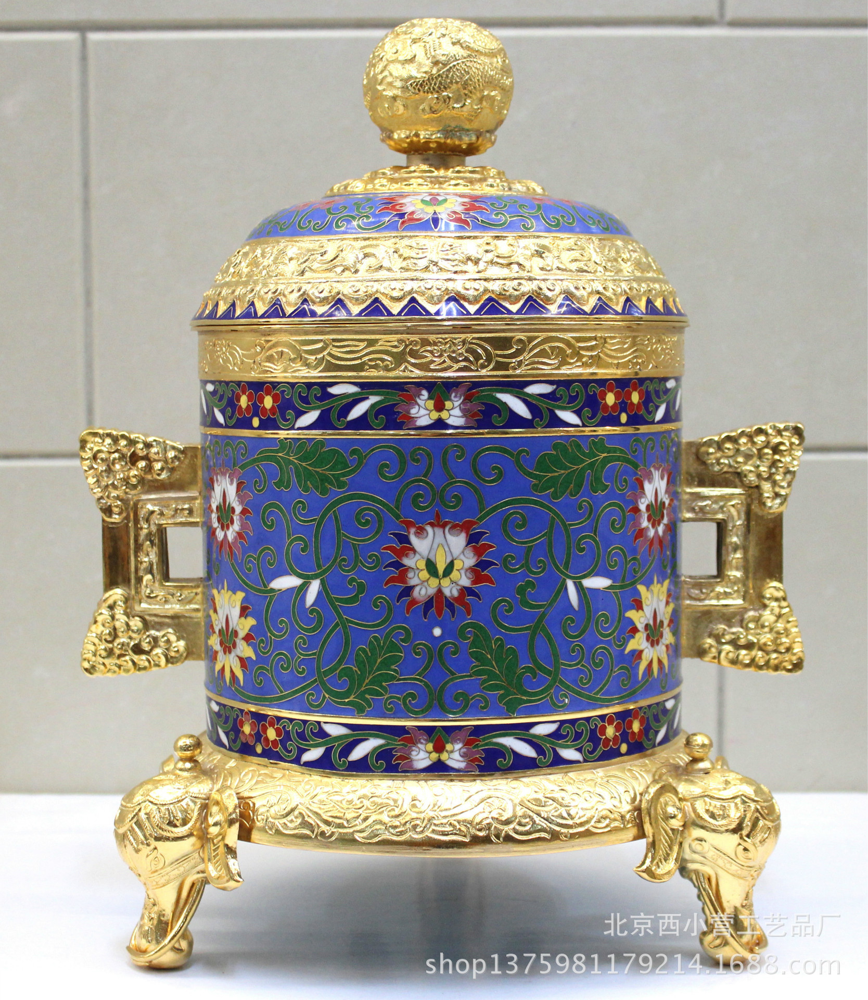
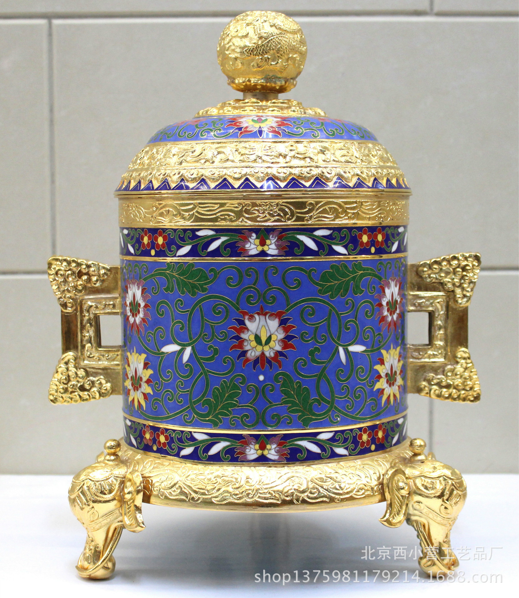

如果说瓷器像茉莉花一样清新高雅，那么景泰蓝一定是牡丹花的高贵大气，虽然他们各有千秋，但不同于瓷器的是景泰蓝的制作工序更为复杂，造型也更多变。经过历史的变迁，有很多的制作技艺已经不多见，如果大家感兴趣可以到珐琅厂，了解一下被称为工艺美术四大花旦之一的景泰蓝的绚烂辉煌。
由于采用 铜丝掐花起线的方法，通常被称作“铜胎掐丝珐琅”，这是景泰蓝的主导产品，市场上95%以上的景泰蓝均为“铜胎掐丝珐琅”，金、银胎掐丝珐琅由于胎体比较 贵重，市场需求也非常少，所以基本没有生产厂家。
金属錾胎珐琅器的制 作工艺，是在已制成的比较厚的铜胎上，依据纹样设计的要求描绘出图案的轮廓线，然后用金属雕錾技法，在图案轮廓线以外的空白处进行雕錾减地，使得纹样轮廓 线凸起，再在凹下处施珐琅釉料，经焙烧、磨光、镀金而成。
按照图案设计要求，在金、铜等金属胎上锤出凹凸不平的图案 花纹之后，再在花纹内点蓝、烧蓝、镀金而成。珐琅呈隐起效果，恰似在金碧辉煌的地子上镶嵌的宝石，光彩夺目。
金属胎透明珐琅器一般称为“透明珐琅 器”，俗称“银蓝”或“烧银蓝”。制作工艺是将具有透明性的各种釉料涂饰在做过艺术加工的金胎、银胎(或铜镀银胎)上，经几次饰涂烧结后，露出胎上的花纹。
彩釉金丝，新起之蓝
welcome ！


 
